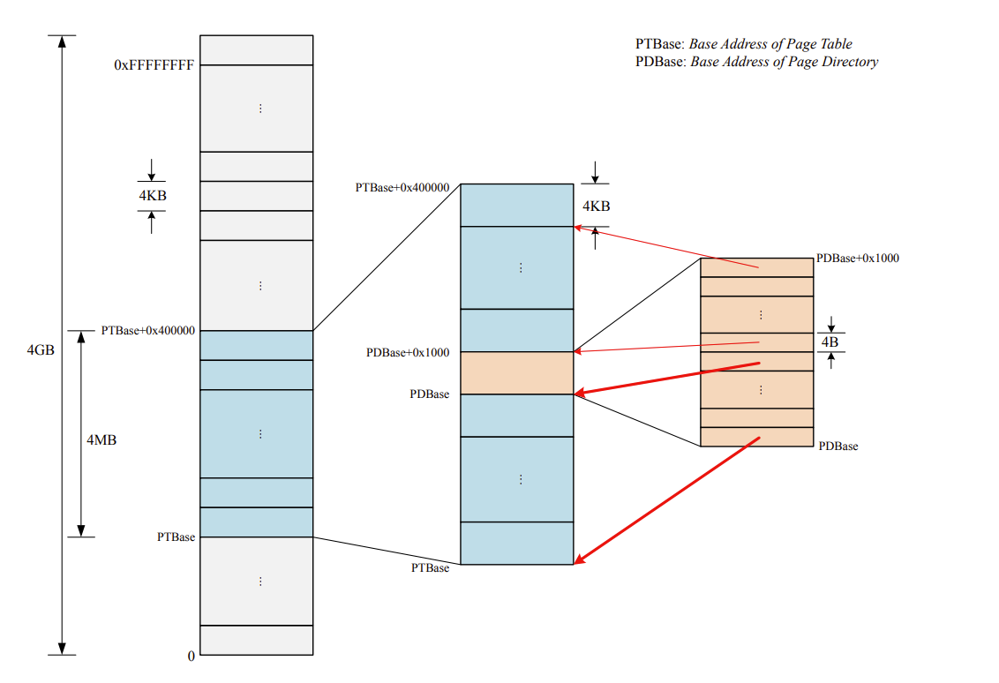
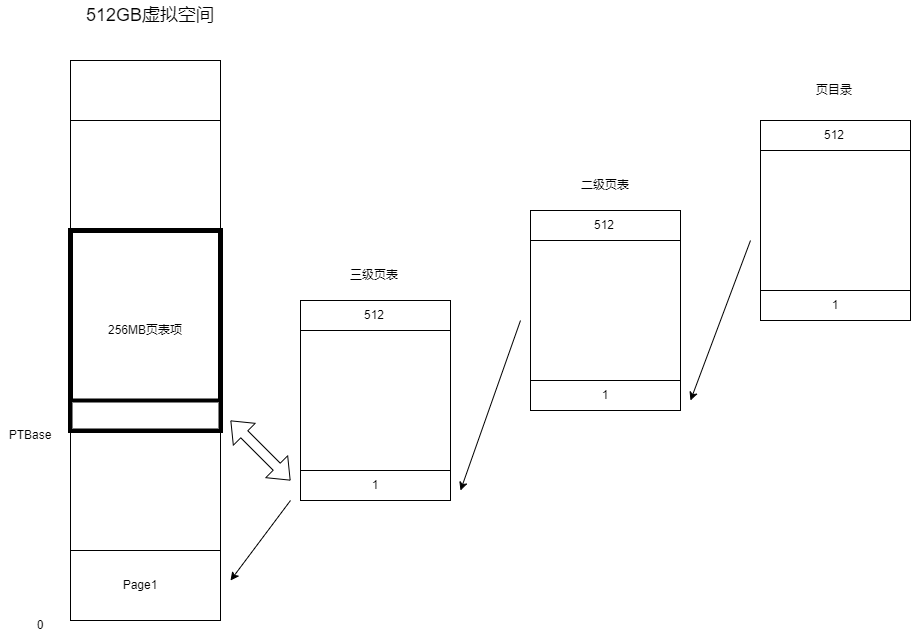
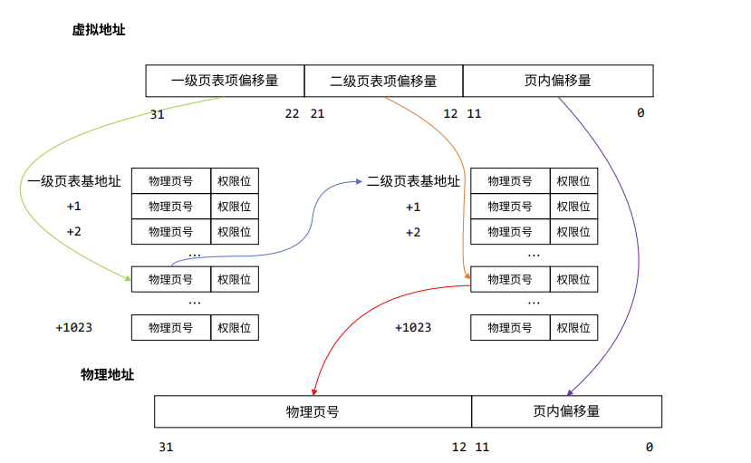
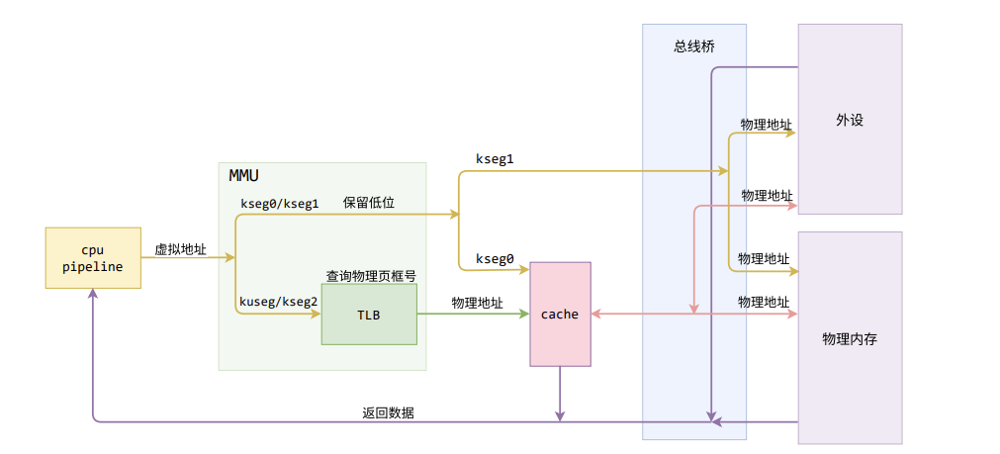

BUAA_OS_lab2
BUAA_OS_lab2学习日记
一、思考题Thinking
Thinking 2.1
问题：在编写的 C 程序中，指针变量中存储的地址 被视为虚拟地址，还是物理地址？MIPS 汇编程序中 lw 和 sw 指令使用的地址被视为虚拟 地址，还是物理地址？
答：均为虚拟地址，访存、跳转等指令以及用于取指的 PC 寄存器中的访存目标地 址都是虚拟地址。我们编写的 C 程序中也经常通过对指针解引用来进行访存，其中指针的值也 会被视为虚拟地址，经过编译后生成相应的访存指令。也就说编译后指针所存储的地址才会变为物理地址。
Thinking 2.2
问题：
- 从可重用性的角度，阐述用宏来实现链表的好处。
- 查看实验环境中的/usr/include/sys/queue.h，了解其中单向链表与循环链表的实 现，比较它们与本实验中使用的双向链表，分析三者在插入与删除操作上的性能差异。
答：
- 简化代码量，使用宏定义可以减少代码的服用对函数进行封装，提高了代码的可读性。
- 以下是各自特性
- 单向链表：如果要执行删除某一节点的下一个节点和在某一结点后插入可以直接进行，此外，由于每次能访问一个节点的下一个节点，插入节点和删除节点相同，每次必须从头节点遍历找到节点才能找到进行删除和插入操作。
- 循环链表如果要执行删除某一节点和在某一结点后插入可以直接进行，此外，由于循环链表也是单向链表，每次也只能访问一个节点的后一个节点，但是每次遍历时不必从头节点开始。
- 双向链表可访问某一节点的前后节点，在某一节点前后插入或删除前后节点都可以直接执行，此外查找删除操作对于某些链表还可以使用二分法提高效率。
Thinking 2.3
1 | |
综上可以选出C
1 | |
Thinking 2.4
问题：
- 请阅读上面有关 TLB 的描述，从虚拟内存和多进程操作系统的实现角度，阐述 ASID 的必要性。
- 请阅读 MIPS 4Kc 文档《MIPS32® 4K™ Processor Core Family Software User’s Manual》的 Section 3.3.1 与 Section 3.4，结合 ASID 段的位数，说明 4Kc 中可容纳不同的地址空间的最大数量。
答：
- ASID用于区分不同的地址空间，在多进程操作系统中，由于同一虚拟地址在不同的地址空间中通常映射到不同的物理地址，使用ASID区分不同的地址空间可以保证不用每次切换进程时TLB也要改变。
- ASID有8位，可以区分256个不同的地址空间。
Thinking 2.5
请回答下述三个问题：
- tlb_invalidate 和 tlb_out 的调用关系？
- 请用一句话概括 tlb_invalidate 的作用。
- 逐行解释 tlb_out 中的汇编代码。
答：
- ```C
//由函数声明可以看出tlb_invalidate调用tlb_out
void tlb_invalidate(u_int asid, u_long va) {
}tlb_out((va & ~GENMASK(PGSHIFT, 0)) | (asid & (NASID - 1)));1
2
3
4
5
6
7
8
9
10
11
12
13
14
15
16
17
18
19
20
21
22
23
24
25
26
27
28
29
30
31
32
33
34
35
36
37
38
39
40
41
42
43
- 实现删除特定虚拟地址在 TLB 中的旧表项
- ```C
#include <asm/asm.h>
LEAF(tlb_out)
.set noreorder
mfc0 t0, CP0_ENTRYHI
/*将当前EntryHi寄存器的值赋给t0保存当前的VPN和ASID*/
mtc0 a0, CP0_ENTRYHI
/*将调用函数传入的参数即新的VPN和ASID写入EntryHi寄存器*/
nop
/*冒险处理*/
/* Step 1: Use 'tlbp' to probe TLB entry */
/* Exercise 2.8: Your code here. (1/2) */
tlbp
/*根据 EntryHi中的Key查找对应的旧表项，将表项的索引存入CP0_INDEX*/
nop
/* Step 2: Fetch the probe result from CP0.Index */
mfc0 t1, CP0_INDEX
/*取出CP0的值*/
.set reorder
bltz t1, NO_SUCH_ENTRY
/*如果没有查到对应表项*/
.set noreorder
mtc0 zero, CP0_ENTRYHI
mtc0 zero, CP0_ENTRYLO0
mtc0 zero, CP0_ENTRYLO1
/*将CP0_ENTRYHI、CP0_ENTRYLO0、CP0_ENTRYLO1三个寄存器赋值为0，后续写入实现清零*/
nop
/* Step 3: Use 'tlbwi' to write CP0.EntryHi/Lo into TLB at CP0.Index */
/* Exercise 2.8: Your code here. (2/2) */
tlbwi
/*将 EntryHi 和 EntryLo0、EntryLo1 中的值写入索引指定的表项*/
.set reorder
NO_SUCH_ENTRY:
mtc0 t0, CP0_ENTRYHI
/*将t0的值写回CP0_ENTRYHI*/
j ra
/*函数返回*/
END(tlb_out)
Thinking 2.6
问题：
- 简单了解并叙述 X86 体系结构中的内存管理机制，比较 X86 和 MIPS 在内存管理上的区别。
- 简单了解并叙述 RISC-V 中的内存管理机制，比较 RISC-V 与 MIPS 在内存管理上的区别。
- 简单了解并叙述 LoongArch 中的内存管理机制，比较 LoongArch 与 MIPS 在内存管理上的区别。
答：
- 在x86架构中内存被分为三种形式，分别是逻辑地址（Logical Address），线性地址（Linear Address）和物理地址（Physical Address）。而mips内存只有两种形式。X86 体系结构中的内存管理机制是基于分段和分页的。分段是将程序的地址空间划分为若干个段，每个段都有自己的基地址和长度，可以独立地进行保护和共享。而X86在TLB不命中时，是由硬件MMU以
CR3为当前进程的PGD基址，索引获得PFN后，直接输出PA。同时MMU会填充TLB以加快下次转换的速度。另外转换失败的虚址，MIPS使用BadVAddr寄存器存放，X86使用CR2存放。 - RISC-V提供三种权限模式（MSU），而MIPS只提供内核态和用户态两种权限状态。RISC-V SV39支持39位虚拟内存空间，每一页占用4KB，使用三级页表访存。
- 硬件能够支持两级地址翻译，x86到LoongArch+虚地址到物理地址（通过改造内存快表TLB，做到两级虚地址映射以减少映射开销，以及减少指令使用/指令翻译开销，即X86虚地址直接翻译成龙芯物理地址）
Thinking A.1
问题：在现代的 64 位系统中，提供了 64 位的字长，但实际上不是 64 位页式存储系统。假设在 64 位系统中采用三级页表机制，页面大小 4KB。由于 64 位系统中字长为 8B，且页目录也占用一页，因此页目录中有 512 个页目录项，因此每级页表都需要 9 位。 因此在 64 位系统下，总共需要 3 × 9 + 12 = 39 位就可以实现三级页表机制，并不需要 64 位。现考虑上述 39 位的三级页式存储系统，虚拟地址空间为 512 GB，若三级页表的基地址为 PTbase，请计算：
- 三级页表页目录的基地址。
- 映射到页目录自身的页目录项（自映射）。
答：
分析：页目录通常指一级页表，以二级页表为例：
页目录的1024 个表项映射到这 1024 个页表。因此只需要 4MB 的空间即可容纳页表和页目录。

同理，本题中，三级页表中，页目录的512个二级页表项映射到512个三级页表映射到512个页表。虚拟地址可以化为$2^{39} / 2^{12} = 2 ^ {27}$页，既需要$2^{27}$个页表项接收这么多个页表的映射。

于是页号： PN = PTBase >> 12;
二级页表的基地址：PTTBase = PTBase + PN* 8 = PTBase + PTBase >> 9
一级页表(页目录)的基地址：PSTBase = PTBase + (PTTBase >> 12)*8
映射到页目录自身的页目录项的地址：PDBase =PTBase + (PSTBase >> 12)*8 = PTBase + PTBase >> 9 + PTBase >> 18 + PTBase >> 27
二、Exercise
exercise 2.1
mmu.h文件中定义了page的大小根据物理内存/页面大小即可求出页面数
1 | |
exercise 2.2
易错点：指向下一个元素的指针 le_next，以及指向前一个元素链表项 le_next 的指针 le_prev（指针的指针）
exercise 2.3
1 | |
exercise 2.4
1 | |
exercise 2.5
调用LIST_INSERT_HEAD即可
exercise 2.6
第一级表称为页目录 (Page Directory)，第二级表称为页表 (Page Table)。
设 pgdir 是一个 Pde * 类型的指针，表示一个一级页表的基地址，那么使用 pgdir + i 即可得到偏移量为 i 的一级页表项（页目录项）地址

1 | |
exercise 2.7
1 | |
exercise 2.8
题目描述的很清楚，指令填入即可，核心在于理解旧表项是如何被无效化的
1 | |
exercise 2.9
1 | |
exercise 2.10
1 | |
三、实验难点及感想
实验感想
本次实验几乎花了整个周末，实验总体分为虚拟内存和TLB 重填两大部分，其中TLB重填部分由于提示给的相当足够，完成起来不是特别难，但是理解TLB重填的汇编代码较为困难，虚拟内存部分宏定义和大量指针的存在加大了阅读的难度，总体来说，lab2相比前两次，难度有了质的上升，特别是两级页表部分的实现，需要阅读大量的代码才能读懂。
核心处理重难点
实验的核心都在围绕下面这张图进行寻址和地址处理

面对全是宏定义和满天飞的指针，理解各个宏定义的含义尤为重要。
常见宏的理解
page2kva：将页面转换为虚拟地址page2pa：将页面转换为物理地址pa2page: 物理地址到页KADDR:将物理地址转化虚拟地址PADDR:将虚拟地址转化为物理地址
自映射机制
思考题A.1困扰我良久，下面是我找到到的比较详细的解释：
一些计算：因为1M个页表项和4G的地址空间是线性映射，因此页目录地址（简称PD）对应的应该是第PT>>12个页表项，也就是第一个页目录项。而一个页目录项32位，4字节，因此该项相对于起始地址的偏移为(PT>>12)<<2 = pt>>10，因此PD = PT | PT>>10。同理，PT>>10是页目录在整个页表上的偏移，对应(PT>>10)>>10是自映射页目录项在页目录这张页表上的偏移。